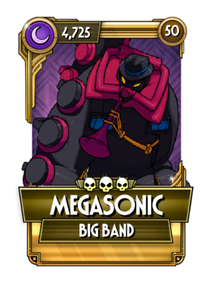

고유 능력 1: 공격을 방어하면 받는 피해량이 75%만큼 감소하고 5초 동안 분노 효과를 얻습니다. 공격을 성공시키면 분노 효과 1중첩이 제거됩니다.
고유 능력 2: 분노 효과가 유지되는 동안, 준 피해량의 50%를 체력으로 회복합니다.
어둠 원소 유물로만 얻을 수 있는 스킨. 컬러링과 이름의 모티브는 메가드라이브. 적의 공격을 방어할 경우 받는 피해량이 기본적으로 75% 깎이는데 스킬 트리 풀업 시 방어 피해 감소가 15%만큼 올라가므로 방어 피해 감소 옵션을 추가적으로 10%만 맞춰도 방어 시 아무런 피해를 입지 않는다. 방어 시 생기는 일회성 분노 버프를 받은 채로 적을 타격하면 피해량의 절반만큼 체력을 회복하데, 약한 연타를 때리는 빅 밴드 특성상 분노 받고 치는 타격이 별로 강력한 편은 아니라 분노의 효용과 체력 회복량 모두 별 볼 일 없다.